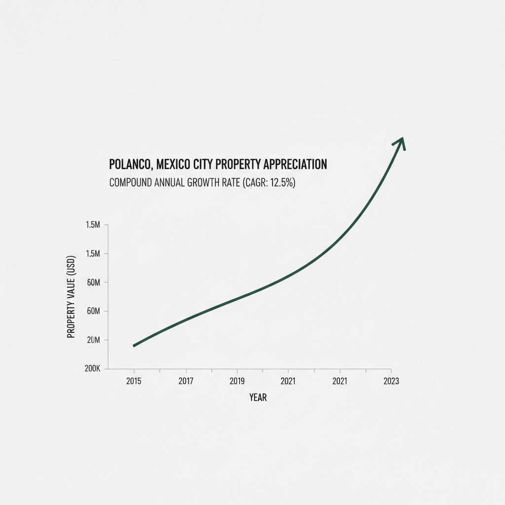

Architectural Guide 2026
Polanco: A Sanctuary of Capital in Mexico City
Beyond its reputation for luxury, Polanco is Mexico City's premier capital preservation asset class. We navigate its intricate architectural codes and robust infrastructure, transforming strategic opportunity into enduring value.
The Resident Architect's View
I work from a sun-drenched studio overlooking Parque Lincoln, appreciating the architectural narrative of Colonial Californiano villas subtly evolving into contemporary masterpieces. Polanco isn't just a neighborhood; it's a testament to enduring value, where every tree-lined avenue speaks of legacy and strategic investment. Even the unique light filtering through the mature trees along Aristóteles at 5 PM casts a golden hue that underscores its distinct character, drawing me here time and again.

Erik Martínez, AIA
Principal Architect. Former SHoP Architects NYC. Bringing international precision to CDMX's most complex heritage assets.
Iconic Landmarks
- Avenida Presidente Masaryk (Luxury Commercial Spine)
- Parque Lincoln (Neighborhood Green Heart)
- Museo Soumaya (Iconic Architecture)
- Teatro Ángela Peralta
- Plinio's Monument to Octavio Paz
Polanco: A Micro-Economy Forged in Distinction
Polanco, nestled in the affluent Miguel Hidalgo borough, operates as a distinct micro-economy within Mexico City’s complex residential market. Unlike speculative high-yield environments, it functions as a sophisticated capital preservation asset class, fortified by rigorous zoning laws, geographical advantages, and robust international capital flows. Its genesis from hacienda lands in the 1920s, 30s, and 40s dictated an urban plan of wide, leafy avenues—such as the grand tree-lined promenade of Avenida Horacio—and a low-density residential character that persists today, offering a unique blend of historical grandeur and contemporary discretion. The 2026 landscape sees the capital city’s market stabilizing at 4.90% growth, a mature trajectory distinct from the national 8.7% nominal growth, signaling Polanco's defensive positioning against broader market volatilities.
The Allure of the Renovated Lifestyle Property
For cross-border capital, Polanco's appeal often lies in acquiring and meticulously renovating mid-century or late-20th-century apartments. While new builds command a +12% premium over comparable existing properties, sophisticated investors target secondary-market assets for profound structural and cosmetic updates. We transform these properties into contemporary international luxury standards, ensuring they meet the exacting demands of our elite clientele. Net rental yields, while strictly contracting to a bandwidth of 4.5% to 5.5% due to substantial HOA fees (mantenimiento) and high localized property taxes (predial), offer stable returns, particularly as comprehensive 2024 lodging reforms limit short-term rentals to a 180-night annual cap and many HOAs outright prohibit them. This regulatory shift pivots the market firmly towards high-value, long-term executive leasing, commanding premiums 300% to 500% above the broader CDMX average for properties offering 24/7 private security, reliable water cistern systems, and essential off-street parking.
Geotechnical Reality: Polanco's Seismic Advantage
Mexico City's seismic reality is a paramount consideration, and Polanco offers a distinct, critical advantage. Unlike other popular luxury enclaves such as Roma and Condesa—which sit squarely in the hazardous Zone III soft lakebed and suffered catastrophic building collapses—Polanco lies predominantly within the safety of Zone I (Firm Ground) and the immediate borders of Zone II (Transition). This means its subsoil—composed mainly of basaltic lava and highly compact pyroclastic flows—exhibits high resistance and dramatically lower seismic wave amplification. For your investment, this translates directly into less complex and significantly less expensive foundation engineering. We can often utilize standard reinforced concrete footings or shallower raft foundations, a stark contrast to the deeply driven friction piles combined with fully compensated raft foundations required in Zone III to merely manage the region's 30 cm/year subsidence rates. Polanco's horizontal peak ground acceleration design parameters are highly favorable: 0.04g for Zone I and 0.08g for Zone II.
Bridging international engineering standards with local execution is our expertise. We integrate US NCARB/AIA rigorous design principles with the practical acumen of local maestro de obra labor. This approach directly confronts the phenomenon of the 'Gringo Tax', where foreign investors are often quoted rates 50% to 100% above baseline metrics. Through radical transparency and direct oversight, we ensure that the fair market rate for luxury CDMX construction, ranging from MXN 30,000 to MXN 50,000 per square meter for premium materials and finishes, is maintained, eliminating unwarranted inflation and maximizing your capital efficiency. Our expertise ensures your investment is not only architecturally impeccable but also financially optimized.
Heritage Hurdles: Navigating INBAL & SEDUVI
Polanco's architectural soul, particularly its exquisite Colonial Californiano and Art Deco properties from the 1920s-1940s, is meticulously protected. As these structures postdate 1900, they fall under the strict jurisdiction of INBAL (National Institute of Fine Arts and Literature), not INAH. Specific micro-zones and corridors are heavily catalogued, notably along Avenida Presidente Masaryk, Avenida Horacio, and the perimeter streets of Parque Lincoln, including Julio Verne and Aristóteles, as well as Campos Elíseos.
Renovating an INBAL-protected facade transcends aesthetic preference; it's a legal imperative. Our architectural team specializes in securing a favorable Dictamen Técnico, adhering to mandates such as historically accurate, muted color palettes—rejecting any high-contrast or aggressively modern tones. Original timber, steel, or wrought iron window frames cannot be replaced with modern aluminum or white PVC; they must be meticulously restored or replicated using historically matching materials, even if it compromises modern thermal/acoustic efficiency. Adding additional stories to a catalogued property, even if SEDUVI's H/3/20 zoning theoretically allows for more height, is almost universally rejected by INBAL if it alters the historical silhouette or visual rhythm. Our deep understanding of these Heritage Hurdles ensures your project avoids the costly and legally punitive 'clausura' (project suspension) and instead unlocks the 'Heritage Yield'—the exceptional valuation commanded by exquisitely restored, historically significant properties.
Water Security: Engineering for Autonomy in the Cutzamala Era
Mexico City faces an undeniable hydrological crisis, with the vital Sistema Cutzamala—responsible for supplying water from up to 125 kilometers away—undergoing its first major structural upgrade in four decades, backed by MXN 680 million (USD 39.6 million) in federal investment. While this intervention aims to extend the system's lifespan by 20 years, municipal water delivery pressure in Polanco is frequently intermittent, with multi-day shutoffs common during the dry season. Consequently, private, high-capacity water storage is an absolute, non-negotiable necessity, commanding a distinct rental premium. We engineer systems with both deep subterranean cisterns and rooftop tinacos, specifying non-corrosive, UV-resistant materials from manufacturers like Rotoplas to prevent biological contamination. For a mid-sized luxury apartment, a baseline 5,000 to 10,000-liter cistern capacity is standard, while expansive luxury residences or those with significant landscaping demand a minimum of 15,000 to 20,000 liters to ensure uninterrupted autonomy. These must be paired with commercial-grade hydropneumatic pump systems for high-pressure delivery, and designs must allow for easy *pipas* (private water truck) access for complete municipal failure scenarios. This foresight transforms a city-wide vulnerability into a competitive advantage for your property.
Architectural Feasibility: Polanco 2026
| Project Type | Avg. Permit Time | Seismic Risk Level | Conservation Status |
|---|---|---|---|
| Luxury Apartment Acquisition & Full Renovation | 8-15% of purchase price (for renovation budget); 45-90 Days (Days on Market for acquisition) | Moderate (Requires aggressive negotiation to achieve 10-12% discount off asking price, careful management of 90-180 day permit timeline for Tipo B/C Manifestación) | High Opportunity (Bypasses the 12% new-build premium, creates competitive luxury product for executive leasing) |
| INBAL-Catalogued Property Facade Restoration & Interior Modernization | 90 - 180 Days (for Dictamen Técnico approval); up to 12-18 Months (for full restoration) | High (Strict adherence to INBAL aesthetic constraints—color, fenestration, volumetry; potential for project 'clausura' if not compliant) | Niche (Yields exceptional 'Heritage Premium' and outlier valuations from specific ultra-high-net-worth buyers or luxury commercial entities) |
| New Construction (H/3/20 Zoning) | 90 - 180 Days (for Manifestación de Construcción Tipo B/C); 12-18 Months (construction phase) | Moderate-High (Aggressive Article 300 public space contributions, stringent 20% permeable open space requirement, potential friction with hyper-active 'comités vecinales' and SEDUVI secondary reviews) | Complex (Primarily in specific, limited parcels; requires sophisticated legal and architectural navigation for FAR maximization) |
Bespoke Renovations: Crafting a Modern Sanctuary
Our renovation philosophy in Polanco is about uncompromising luxury and resilience. We move beyond cosmetic upgrades, undertaking profound structural interventions, complete plumbing and electrical overhauls, and essential acoustic retrofitting. Crucially, to counteract Mexico City's extreme acoustic density, particularly from omnipresent itinerant street vendors (the gaseros with their loudspeakers are a pervasive acoustic intrusion), we specify advanced laminated acoustic glass. Utilizing Acoustic Polyvinyl Butyral (PVB) interlayers, typically 0.76mm to 1.52mm thick, achieves a scientifically measured 10-decibel reduction in the critical 1,000 to 3,000 Hz range—a 50% drop in perceived loudness—transforming urban intrusion into serene privacy. We integrate redundant Uninterruptible Power Supply (UPS) systems for power stability and often hydraulic car stackers (*eleva-autos*) to maximize coveted off-street parking, addressing the hyper-local demands of the ultra-high-net-worth client.
Curated Interiors: European Elegance, Mexican Soul
The interiors we design for Polanco reflect a curated sensibility: European elegance fused with the sophisticated materiality of Mexico. We source premium materials—imported marble flooring, luxury acoustic glazing, European hardwood, and high-end imported plumbing fixtures—that elevate costs dramatically to a range of MXN 5,000 to MXN 20,000 per square meter, but define true luxury. Our designs prioritize spatial flow, natural light, and discrete technology integration, creating residences that are not just beautiful, but are also intelligently engineered to serve as havens of comfort and efficiency, perfectly aligned with discerning international tastes. We ensure every detail, from bespoke cabinetry to integrated home automation, functions seamlessly to create a sanctuary of modern living.
The Polanco Cheat Sheet
- Best Streets Avenida Presidente Masaryk, Avenida Horacio, Parque Lincoln Perimeter (Julio Verne, Aristóteles, Tennyson)
- Zoning Code H/3/20 (Habitacional, 3 Levels Max, 20% Minimum Free Area)
- Est. Cost / m² MXN 5,000 - 20,000 / m² (Premium Materials); 8-15% of asset price for Full Renovation
- Best Coffee The Corner Cafe at Parque Lincoln (for sophisticated people-watching) or any boutique along Masaryk
- Local Quirk The pervasive, high-decibel loudspeakers of itinerant street vendors like gaseros (gas delivery trucks) and scrap metal collectors, which necessitate advanced acoustic glazing for tranquil interiors.

The Challenge
The primary challenge in Polanco is navigating aggressive municipal bureaucracy, strict heritage conservation mandates under INBAL, and critical infrastructural vulnerabilities like water security, while still delivering a product that meets international luxury standards.
Securing a Manifestación de Construcción Tipo B/C in the Miguel Hidalgo borough is not a swift process, routinely extending to 90 to 180 days due to inter-agency friction and neighborhood committee approvals. Furthermore, property acquisition involves a non-negotiable 6% to 8% in buyer closing costs, including the progressive ISAI (Impuesto sobre Adquisición de Inmuebles), public registry fees, and Notario Público fees ranging from 1% to 2% of the transaction value.
Our Solution
Our integrated approach leverages deep local expertise in SEDUVI and INBAL protocols, shortening timelines and ensuring compliance. We proactively engineer solutions for water autonomy with large cisterns and acoustic isolation with laminated PVB glass, turning potential liabilities into distinct competitive advantages for your asset.
We specialize in navigating the cultural expectation of negotiation, consistently achieving 10% to 12% discounts off initial listing prices. Our partnerships with top-tier Notarios Públicos and certified Directors Responsables de Obra (DROs)—who assume ultimate legal, civil, and criminal liability for structural integrity—compress bureaucratic timelines by 30% to 50%, maximizing your project's Internal Rate of Return (IRR) by reducing carrying costs and accelerating time-to-market.


Planning to Buy?
Don't sign a contract before a technical audit. We offer pre-purchase structural assessments in Polanco.
2026 Cost Report
Get our detailed breakdown of current labor and material costs for luxury residential in CDMX.
Start Your Polanco Legacy
NYC Precision. Mexican Craft. We eliminate uncertainty for international investors.